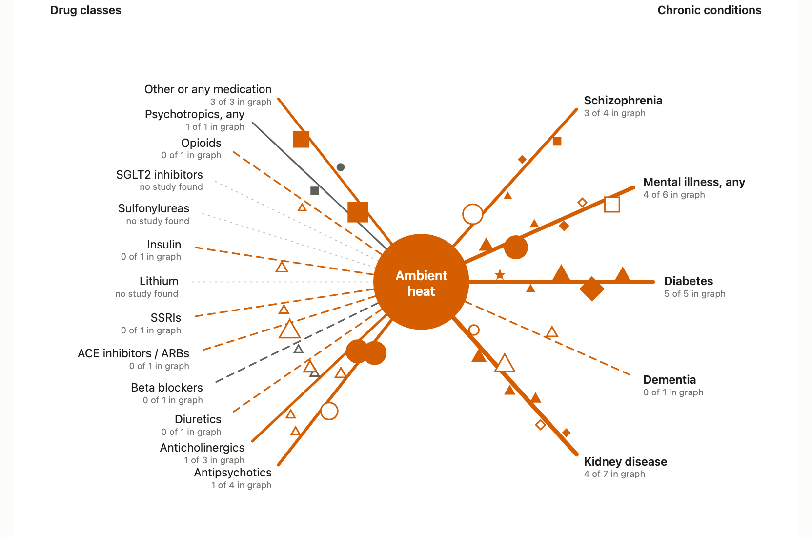

Heat, medicines and chronic illness

62 records read: 36 correct, 12 lost a qualifier, 14 wrong
Filed out of reach: antipsychotics OR 4.6 and anticholinergics OR 6.0 sit under “psychotropic drugs”
No study found: lithium, sulfonylureas, SGLT2 inhibitors
No city test: open data give the prescriber’s ZIP, not the patient’s; the test could not discriminate (D = 2.1)